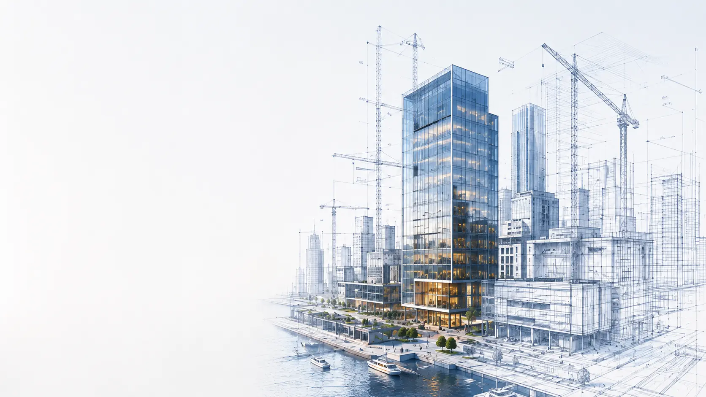
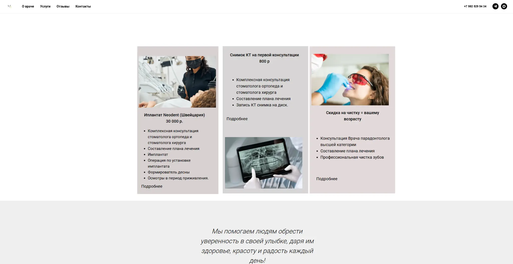
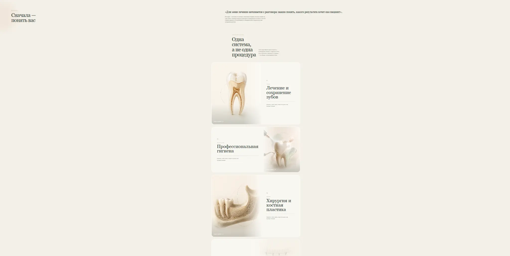
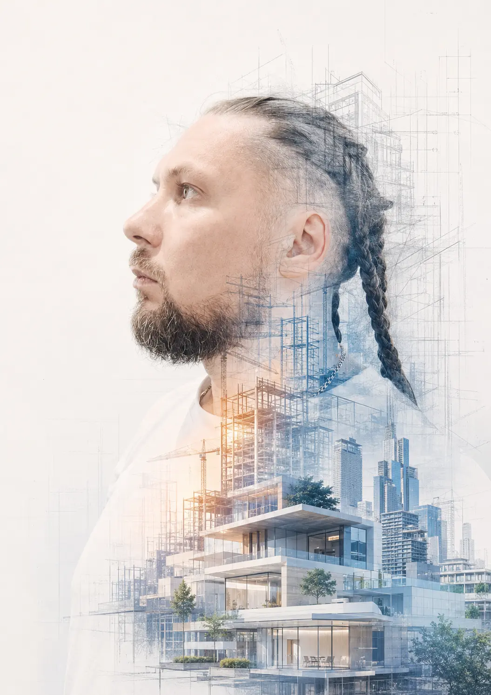

ИССЛЕДОВАНИЕ · СТРАТЕГИЯ · РЕАЛИЗАЦИЯ
ПРЕВРАЩАЮ
ИДЕИ В
ПОНЯТНЫЕ
ПРОДУКТЫ
Изучаю задачу, нахожу сильное направление и собираю всё в одну систему: предложение, тексты, визуал и сайт.
РАЗОБРАТЬ МОЙ ПРОЕКТ →50+реализованных
проектов
проектов
3–6недель
до первого результата
до первого результата
100%фокус
на ваших целях
на ваших целях
исследование
стратегия
реализация
стратегия
реализация
Больше,
чем просто сайт —
целостный продукт
чем просто сайт —
целостный продукт
01020304
01 · НАЧАЛО РАБОТЫ
КАКУЮ ЗАДАЧУ
МЫ РЕШАЕМ?
Выберите свою ситуацию. Вы увидите не название услуги, а конкретный план, результат и риск.
ПОСМОТРЕТЬ ПОДРОБНЕЕ →02 · РЕАЛЬНЫЕ КЕЙСЫ
НЕ ПРОСТО КРАСИВО.
РЕШАЕТ ЗАДАЧУ.
Показываю, как из задачи рождается конкретный, работающий результат.


↔
+320%рост заявок
+45%конверсия
2,3×средний чек
03 · ЧТО Я ДЕЛАЮ
БОЛЬШЕ,
ЧЕМ ОТДЕЛЬНЫЕ УСЛУГИ.
Собираю всё в одну систему: от идеи и стратегии до реализации и сопровождения. Вы получаете не набор услуг, а работающий продукт.
ОБСУДИТЬ ЗАДАЧУ →« Хороший продукт
начинается не с дизайна,
а с правильных вопросов »ALEX ATLAS
